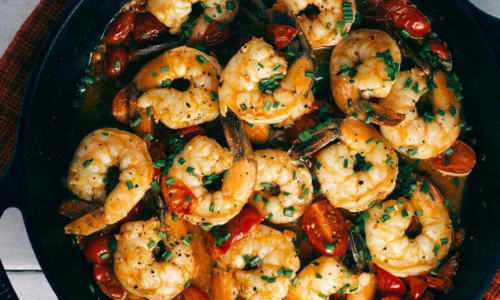

Shrimp and Tomato Skillet
Ingredients
- 1 lb shrimp, peeled and deveined
- 2 cups cherry tomatoes, halved
- 3 cloves garlic, minced
- 1 onion, chopped
- 2 Tbsp olive oil
- 1 Tbsp fresh basil, chopped
- Salt and pepper to taste
Directions
- In a large skillet, heat olive oil over medium heat. Add the onions and cook until
softened.
- Add the garlic and cook until fragrant.
- Add the shrimp and cook until pink.
- Stir in the cherry tomatoes and basil, and cook until the tomatoes are soft and beginning
to break down.
- Season with salt and pepper.
- Serve over a bed of rice or with a side of steamed vegetables.